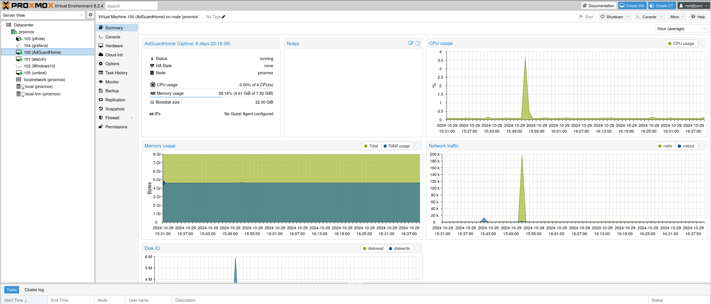
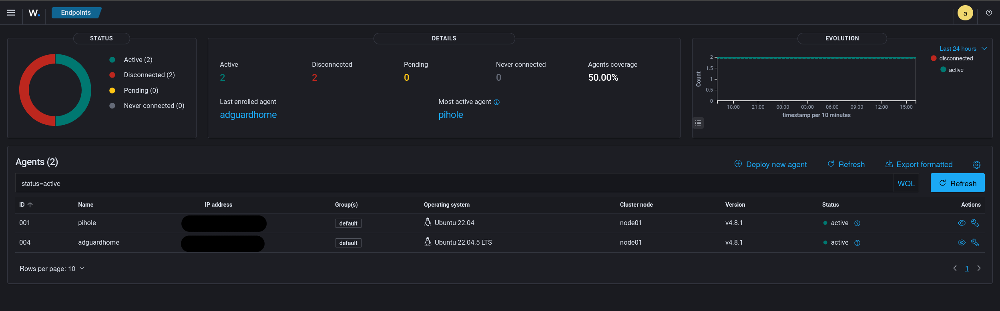
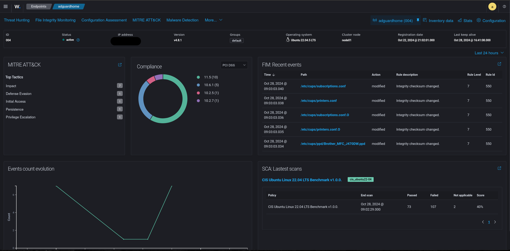
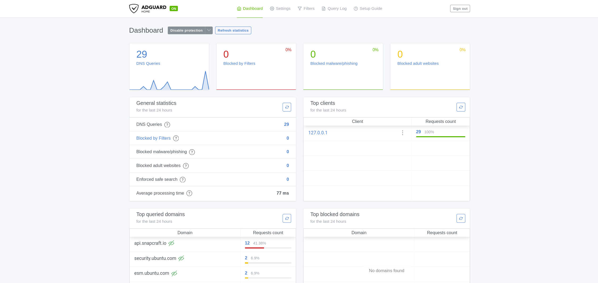
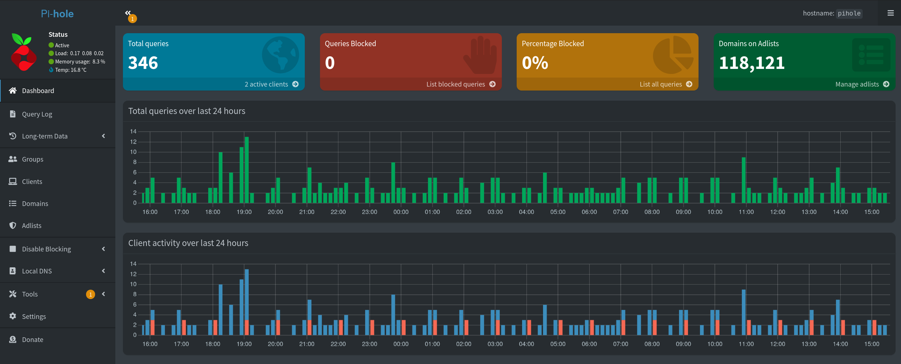

6 years of experience in Information Technology, covering a wide range of disciplines
including networking, hardware, operating systems, audio/video, and developement. Deeply invested in leveraging those disciplines from a security persepective to protect end users and business's from threats.
I have experience in:
- Using OSINT to conduct research and reconnaissance.
- Building and working with SIEM/IDS.
- Using SIEM/IDS and other tools to monitor and detect vulnerabilities and threats.
- Pentesting devices and networks, documenting findings, and taking appropriate action.
- Identifying and responding to security events, following best practices and using a methodical/analytical mindset.
- Designing and implementing policies and procedures for disaster recovery, continuity, and best practices.
- Conducting scans on potentially dangerous media to ensure safe use by other business units.
Virtualization server where many of my projects exist as VMs/Containers. Allows for quick deployment of new projects and a great test environment for new operating systems and software.

My favorite device in my home network. My Synology DS918+ runs many services for all members of my network including file storage, PLEX, data backups, and VPN. RBAC and permissions are configured. The data is not encrypted at rest (yet), so the security policy informs users not to put anything too sensitive on here.
Wazuh is a free and open-source SIEM/IDS, while still being feature rich and comparable, in some ways, to enterprise-grade solutions like Splunk.
Agent software is installed on endpoints to forward logs to the server for analysis. For endpoints that don’t have an agent package, configured log forwarding to the Wazuh server.

Dashboard gives us an at-a-glance view of which endpoints are connected.

Clicking into an endpoint gives us detailed views of compliance, events, and provides links to important functions like File Integrity Monitoring and MITRE ATT&CK information
Documenation
A potential alternative to PiHole which has some more interesting features for blocking undesired content, like more targeted blocking, and blocking based on a schedule. Can also double as a DHCP server, but seems less robust in that way compared to PiHole.

Documentation in progress
Main DNS and DHCP server for the home network.

Documenation
This is a program I wrote in Python which will generate any number of passwords at a desired length and complexity. The idea behind this isn't to necessarily produce extremely random or secure passwords, but rather to generate many "random-enough" passwords and building a rainbow table based off of those results to attempt to crack. It is interesting to see how much computational power is needed to attempt a brute-force, even when you know the algorithm or library used to generate the passwords. The program also checks for duplicates, which actually happen more often than I would have thought, even for basic randomness libraries, which illustrates the importance of entropy when creating secure passwords.
Source Code | Documenation
This is a Security Policy that I wrote and actually use with my family and roommates. It outlines protocols, procedures, tools, and technologies for everyone to leverage which will help them with achieving the best possible CIA (Confidentiality, Integrity, Accessibility) for their data. It also provides a plan and action steps in case of a data disaster so that we can avoid loss and continue operating in our daily lives after an event. Finally, it also addresses risks and trade-offs that should be considered when using the tools so that users are empowered to implement solutions that work best for them, within the framework of the overall security posture.
Security Policy
This website is a simple web project with HTML, CSS, and a little JS.
Source Code